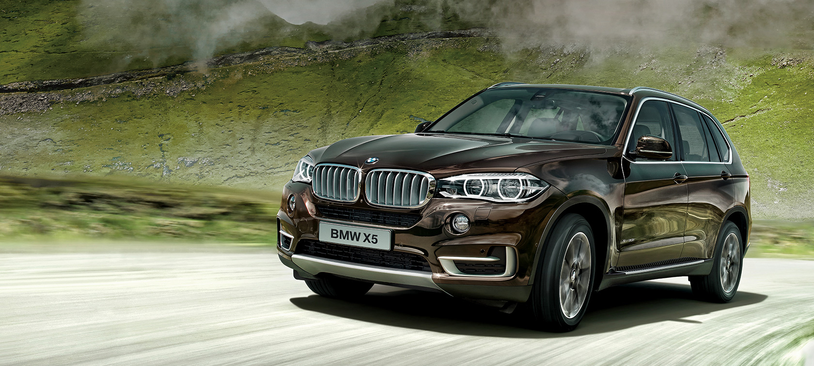
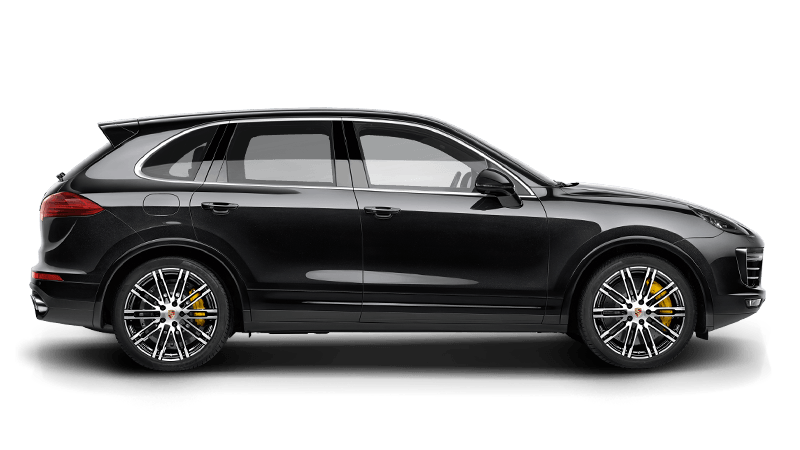

| BMW X5 | |
|---|---|
|
 more images |
The BMW E53 is the first-generation BMW X5 mid-sized luxury crossover SUV. It was produced from 1999-2006[2] and was replaced by the BMW E70. The E53 was developed at a time when BMW still owned Land Rover and as such shares many components and designs with both the Land Rover Range Rover L322 model (specifically the Hill Descent System and Off Road Engine Management system) and the BMW E39 5 Series (specifically engines and electronic systems). The entire in-car entertainment system (Radio Function, Navigation System, Television and Telecommunications systems) are shared with other BMWs and L322.The history of the X5 begins in 1994, when ideas began on a BMW sports utility vehicle after the acquisition of Land Rover. Eduard Walek was named project leader and chief engineer of the E53. Chris Chapman joined BMW Group's Designworks in California later and began working with Bangle in Munich on two full-scale clay models of the E53 for two months. By the autumn of 1996, design work was approved and the design basis for the X5 (E53) was defined, 35 months prior to production. After supplier and engineering involvement, the final design freeze was reached in the first half of 1997, with prototypes being tested from the second half of 1997. Design patents were filed on 10 June 1998[3] and 9 December 1998, being registered in the U.S. on 18 January 2000. |
| Porsche Cayenne | |
|---|---|
|
 more images |
The Porsche Cayenne is a mid-size luxury crossover sport utility vehicle produced by the German manufacturer Porsche since 2002, with North American sales beginning in 2003. It is the first V8-engined vehicle built by Porsche since 1995, when the Porsche 928 was discontinued. It is also Porsche's first off road variant vehicle since its Super and Junior tractors of 1950s, and the first Porsche with four doors. Since 2008, all engines have featured direct injection technology.The Porsche Cayenne entered the market with mixed anticipation. However, it soon proved that it was the performance vehicle among SUVs and was praised for its excellent handling and powerful engines.[3] The lineup initially consisted of the V8-powered Cayenne S and Cayenne Turbo. Later in the model cycle, VR6 and diesel-powered versions joined the lineup. |